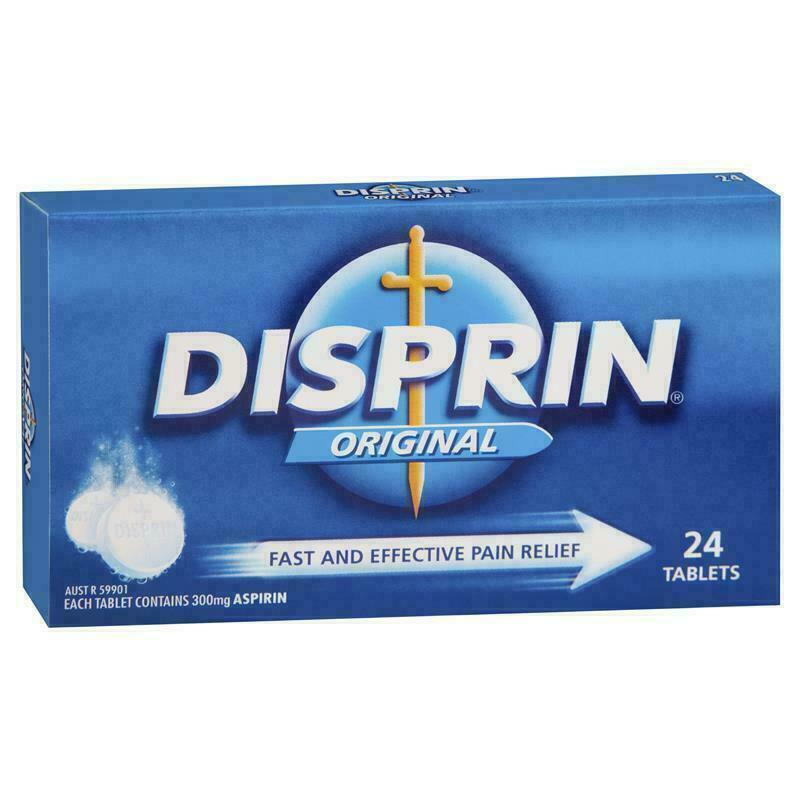

Acetylsalicylic acid - Aspirin
Drug Class
Non-steroidal anti-inflammatory / platelet aggregation inhibitor
Pharmacology
Aspirin inhibits platelet aggregation by irreversibly inhibiting
cyclo-oxygenase, reducing the synthesis of thromboxane A2 (an
inducer of platelet aggregation) for the life of the platelet.
This action forms the basis of preventing platelets from
aggregating to exposed collagen fibres at the site of vascular
injury.
Metabolism
Aspirin is converted to salicylic acid in many tissues, but
primarily in the GI mucosa and liver. It is subsequently excreted
by the kidneys.
Indications
- Suspected Acute Coronary Syndromes
Dosage
Suspected ACS: 300mg orally - chewed, crushed or dissolved
Contraindications
- Allergy and/or adverse drug reaction to aspirin
- Bleeding or clotting disorders (e.g. haemophilia)
- Current GI bleeding or active peptic ulcer
- Patients less than 12yrs old
- Pregnancy
- Severe renal impairment/renal transplant
Precautions
-
Possible aortic aneurysm or any other condition that may require
surgery
- Pregnancy
- History of GI bleeding or peptic ulcers
- Concurrent anticoagulant therapy (e.g. warfarin)
Side Effects
- Anaphylactic/allergic reactions
- Epigastric pain/discomfort
- Gastric mucosa irritation
- Potential bronchoconstriction in asthmatics
Presentation
Tablet (white). 300mg aspirin.
Pharmacokinetics
| Onset |
Duration |
Half-life |
| +-10min (variable) |
1 week (antiplatelet) |
3.2 hours (300-650mg) |
Special Notes
-
Patients who have had less than 300mg aspirin in the previous
24hrs and who present with suspected ACS should be
administered a dose of aspirin.